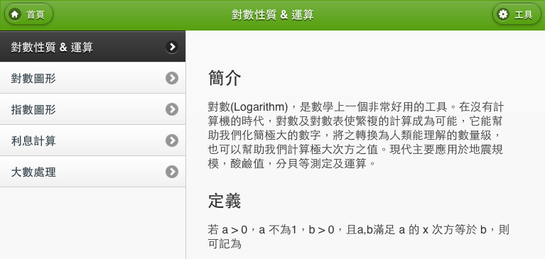

本書原則上相容於大部分桌面版或行動裝置搭載的瀏覽器。不過為取得最佳瀏覽效果，建議使用 Apple iPad 內建之 Safari 瀏覽器瀏覽本書。本書不保證使用其他瀏覽器能正常瀏覽本書。
本書相容於搭載 iOS 4 - 5 的 iPad 第一代至第三代。其中，iPad 第二代以後的瀏覽體驗可能較 iPad 第一代順暢。
本書首頁即為目錄，讀者可自行選取中意的章節，進行瀏覽。進入章節後，頁面左方可以快速選擇同分區的內容。
讀者可捲動頁面，瀏覽章節內容。右上方工具按鈕，提供數學方程式繪圖工具，以及手繪白板功能。
本書支援橫向( Landscape ) 模式，將裝置橫放後，本書會自動調整為適合的大小。
使用 iPad Safari 內建之閱讀器 (位於網址列右方) ，也可以順利瀏覽本書。
互動是圖表支援以觸控方式操作，讀者可以輕觸圖中紅色的小點，並依照圖上的指示上下左右移動。圖表右下角附有控制面板，七個按鈕依序可以 縮小，還原，放大，左移，下移，上移，右移。
本書提供適當數量的例題，供讀者檢驗學習成果，讀者可先讀題後，使用手繪白板功能計算解答。
解答是摺疊式的，方便讀者自行核對答案。
教學影片來源自 YouTube 線上影音網站，故離線時不可使用。
繪圖工具能幫助您畫出指定的函數圖形，如欲畫出下圖的圖形，只要在下方空格內分別輸入 Plot x 和 Plot x^2 - 5 後，按下虛擬鍵盤上的 Enter ( Go ) 即可。更多繪圖指令及說明請見繪圖工具下方的摺疊標籤。
手繪白板能當作您的電子計算紙，建議搭配iPad專用觸控筆使用，效果更佳。若欲清除頁面，只須重新整理該頁面即可。
計算面板能當作一般計算機使用，幫助您計算各種算式。